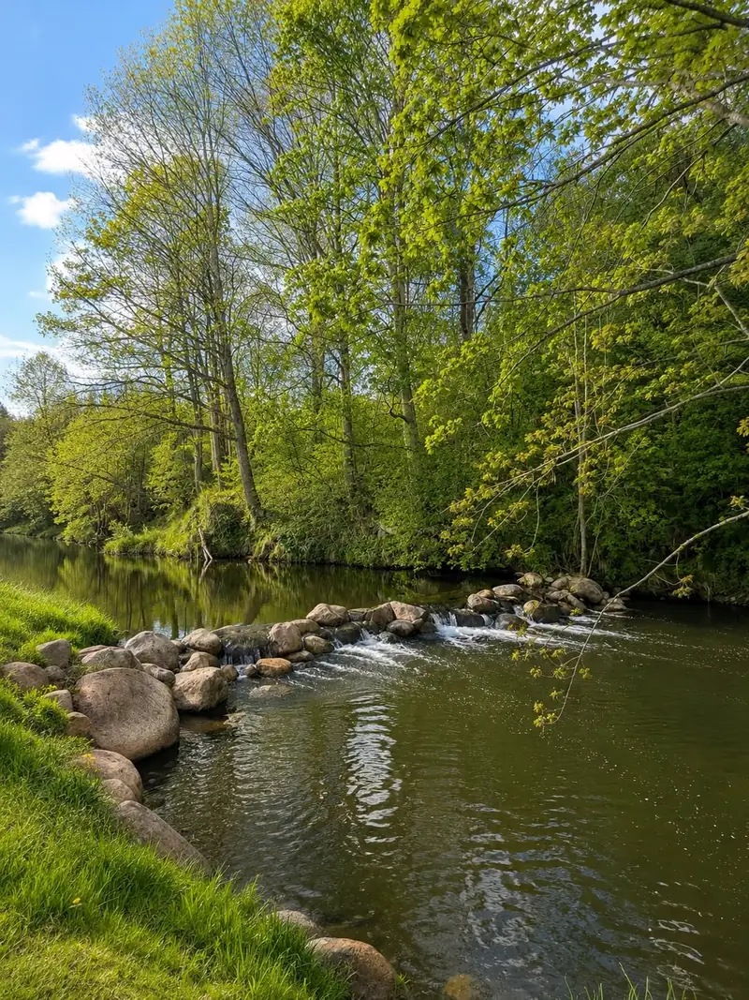
Rytas
Ramybė prie vandens
Diena prasideda lėtai: kava terasoje, pasivaikščiojimas prie upės, rūkas virš tvenkinio. Aplink – tik laukai, medžiai ir paukščiai.
Kaimo turizmo sodyba Mažeikiuose · nuo 2009
Salė iki 100 svečių ir jaukesnė – iki 30. Vestuvės, pobūviai, furšetai ir banketai, o po jų – pirtys, kubilas ir nakvynė čia pat.
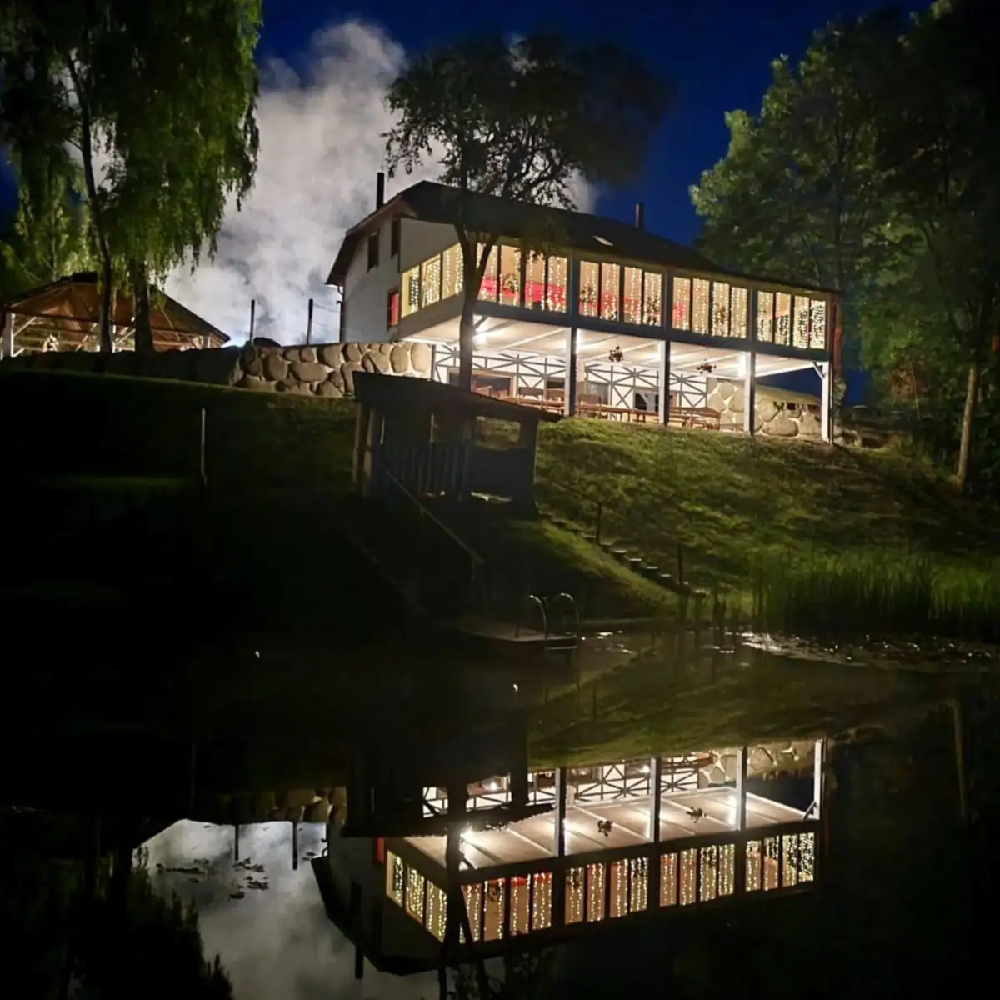
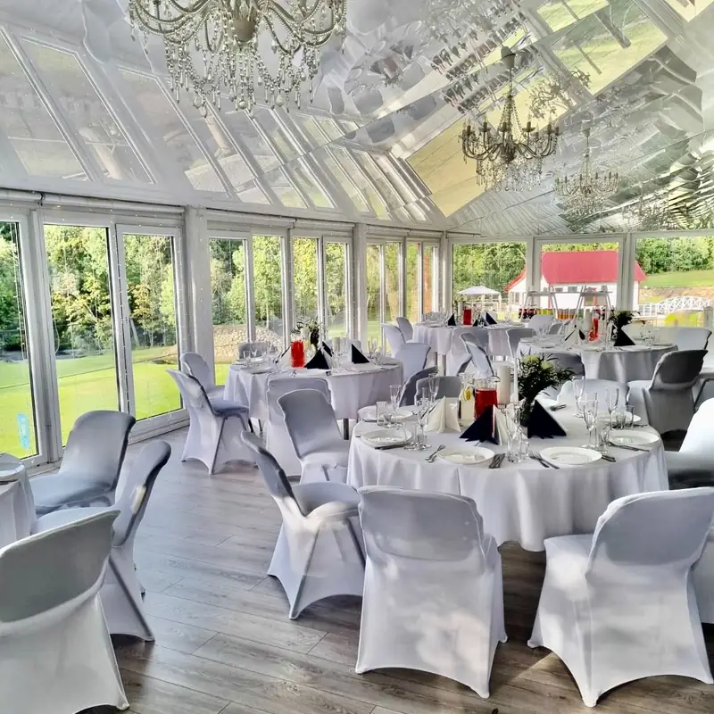
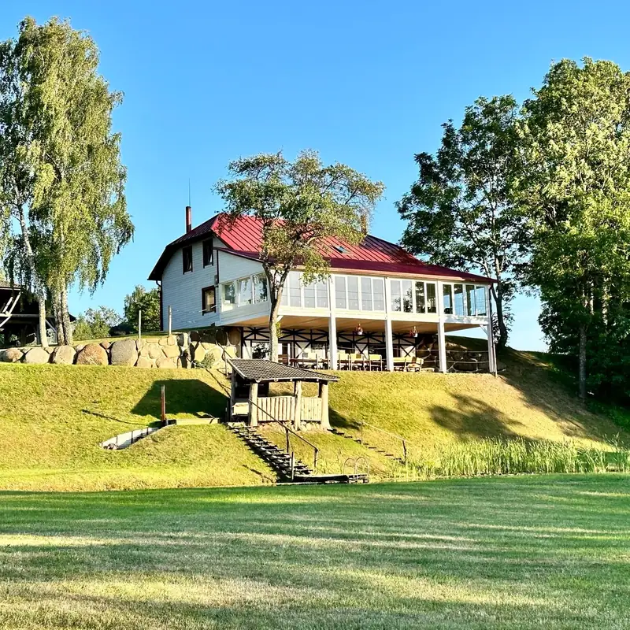
Diena sodyboje
Vienoje vietoje telpa visa šventės diena: ceremonija lauke, vaišės salėje, pirtis ir nakvynė. Svečiams nereikia niekur važiuoti.

Rytas
Diena prasideda lėtai: kava terasoje, pasivaikščiojimas prie upės, rūkas virš tvenkinio. Aplink – tik laukai, medžiai ir paukščiai.
Diena
Vestuvių ceremonijai – vieta tarp riedulių ir senų medžių. Suolai svečiams, arka jaunavedžiams ir stalas šampanui po to, kai pasakomas „taip“.
Klausti apie vestuves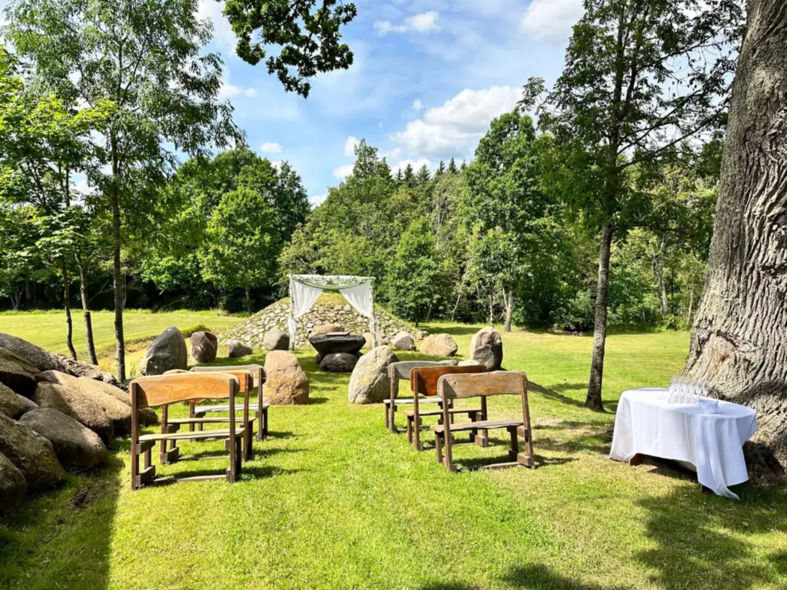
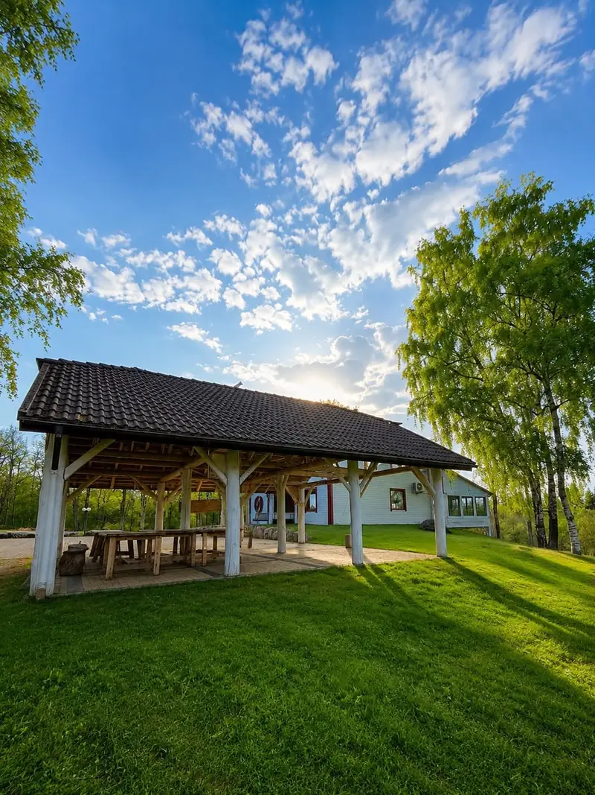
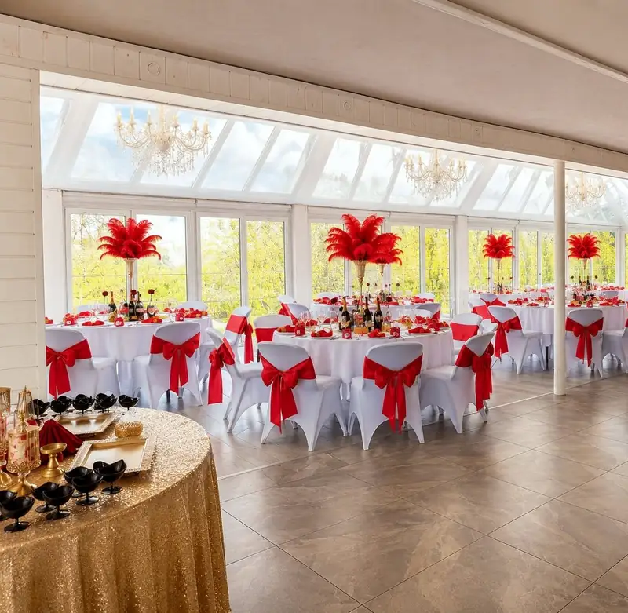
Vakaras
Salėje telpa iki 100 svečių, o jaukesniam pobūviui – iki 30. Pro langus matyti sodas ir tvenkinys. Furšetai, banketai ir desertų stalai – pagal jūsų šventę.
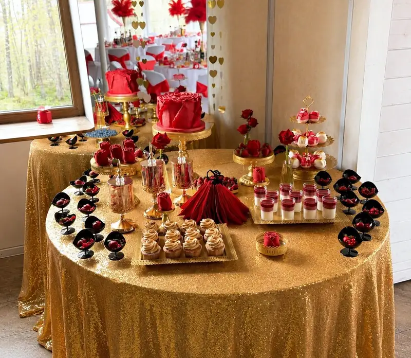
Naktis
Kai muzika nutyla, įkaista pirtis ir kubilas. O miegoti – čia pat, sodyboje: nereikia ieškoti taksi ar skirstytis anksčiau laiko.
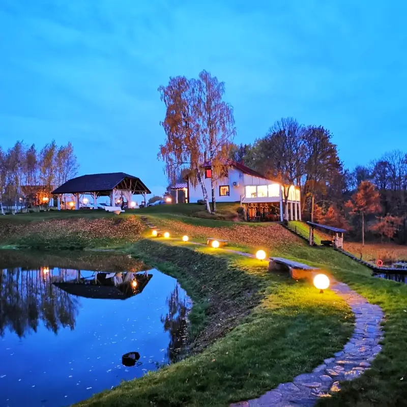
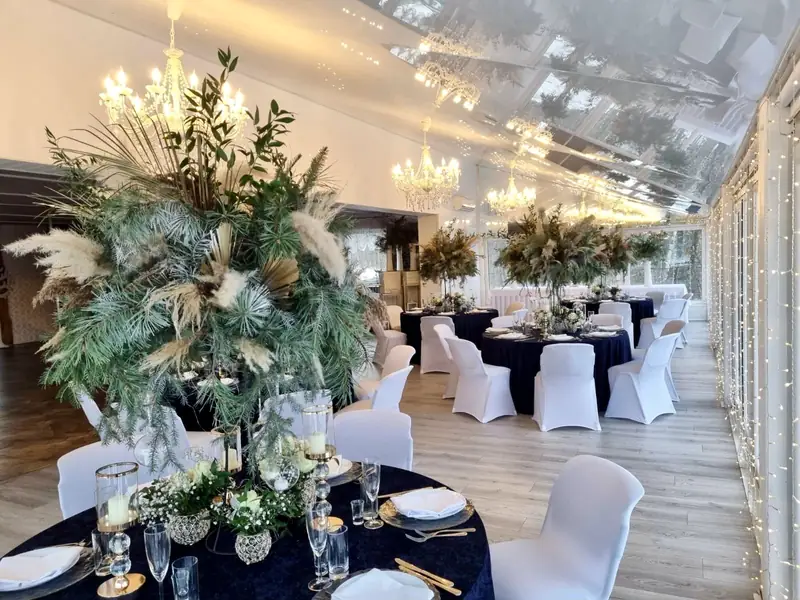
Paslaugos
Ceremonija lauke, puota salėje, nakvynė svečiams.
Gimtadieniai, jubiliejai, krikštynos, susitikimai su draugais.
Maistas vietoje – nuo furšeto iki sėdimo banketo.
Po šventės arba kaip atskiras poilsio vakaras.
Šventės svečiams ir įmonių darbuotojams.
Konferencijos, sąskrydžiai iki 1000 žmonių, darbuotojų apgyvendinimas.
Futbolo aikštelė, tinklinis, krepšinis, pripučiamas batutas, putų patranka, vandens bėgimo kamuoliai.
Salės ir detalės
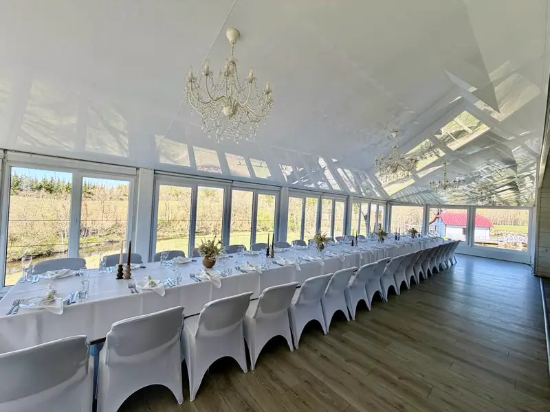
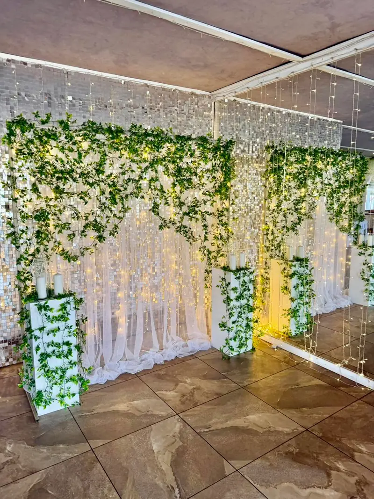
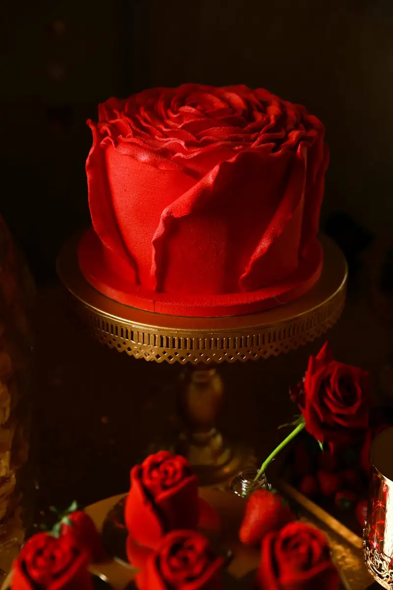
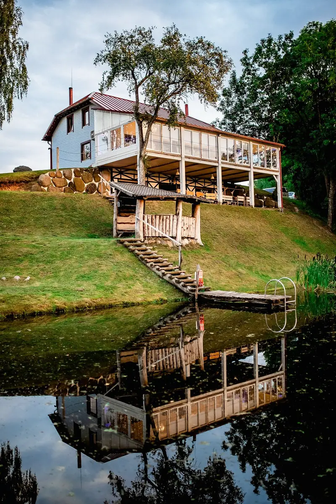
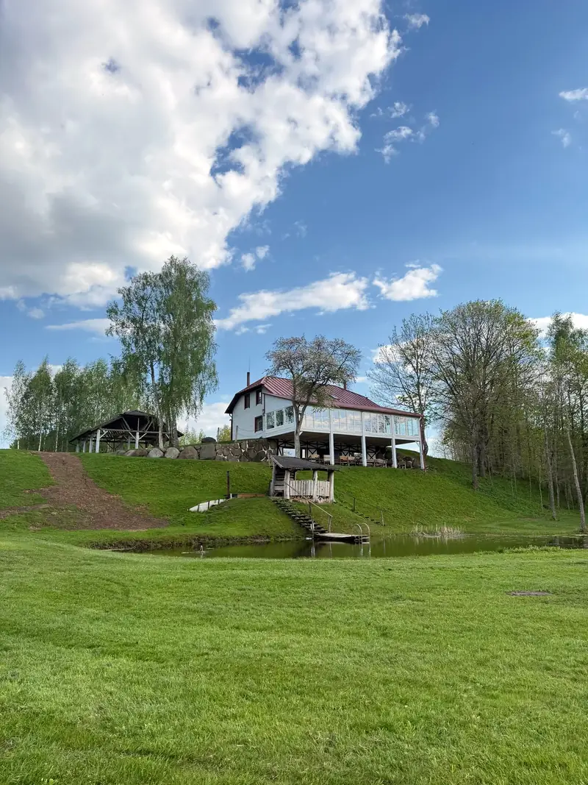
Užklausa
Parašykite datą ir svečių skaičių – susisieksime ir aptarsime detales. Greičiausia – paskambinti.
+370 658 99738